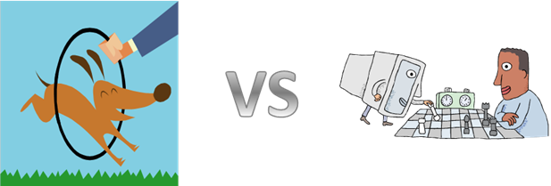
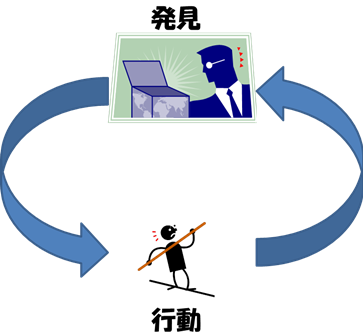

f-Lab イントロダクション
人工知能 VS 生きている犬
現代の人工知能の技術はとても進んでいて，チェスの世界チャンピオンも打ち負かしましたし，将棋のプロにも勝ちました．では人工知能と犬を比べたら、本当に賢いのはどっちでしょう？もちろん犬はチェスで勝つことはおろか、ルールを覚えることも理解することもできません．でも人工知能はチェスを楽しむことができません．勝ってうれしがったり，負けて悔しがったりもしません．一方，犬は飼い主と遊んで楽しいことを知っていますし，また盲導犬は実に賢く飼い主を導くことができます．真に賢いのはどちらなのでしょうか？

脳科学をヒントに知的システムをつくる
人工知能やロボットの研究は目覚ましい発展を遂げています．でも日々の日常生活に入り込み，人間社会の一員になるには，クリアしなければいけない課題がまだたくさんあります．たとえば，私たちの生活はけっして単調な繰り返しではなく，必ず今日とは違う明日が待っています．過去の経験の丸暗記だけでは未知の経験に対処できません．そのためには，過去の経験から「コツ」や「知識」を抽出し，習得する必要があります．でもなにがコツなのか，どこが大事なポイントなのかは誰も教えてくれません．これは一例で，ほかにも難しい課題はたくさんあります．でも私たち人間や，犬も含めた動物たちは，どうにかしてそれをやってのけています．それは脳がやっているはずですから，脳の中にヒントが隠されているはずです．脳科学の成果をヒントに脳型の人工知能を開発する研究が進んでいます．

「やさしさ」を持つ人工知能は実現するのか
『星の王子さま』には「本当に大事なものは目に見えない」という言葉が出てきます．これが重要な手がかりです．目に入ってくる光の情報，耳に聞こえる音の情報そのものが大事なのではなく，光や音の背後に隠された真の情報―家族の姿であったり呼ぶ声であったり―を知ることが脳にとって一番大事なはずです．だから「真の知りたいことはいつも隠されている」という前提に立ち，過去の経験からそれを推論する方法を見つける，そんなアプローチの研究が進んでいます．たとえば本研究室では「今までの経験を地図のように表現する」という方法を研究しています．経験を重ねながら自分だけの地図を育てるのです．そうすれば地図を頼りに明日を生きていけますし，目に見えない「コツ」や「知識」も地図の中に見つけられると考えています．ゆくゆくは「やさしさ」や「思いやり」といった目に見えない，直接はプログラムできないものも発見できるような，そんな知能の開発につながればと考えていますこのように、本研究室で扱っている研究テーマは「自己組織化」を共通のキーワードとしつつも、非常に多岐にわたります。そこで現在行われている主な研究テーマについて紹介します。ぜひ皆さんも、私たちと夢を共有して研究に取り組んでみませんか。